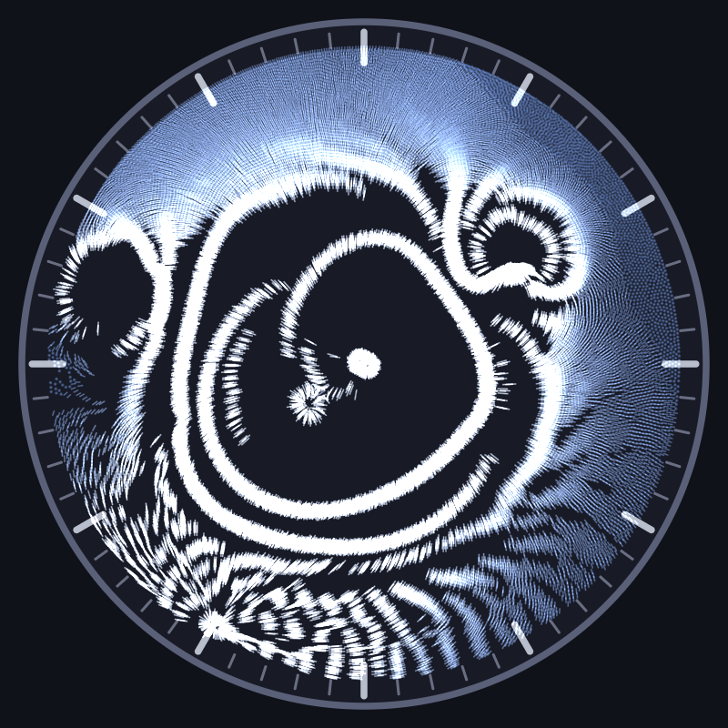
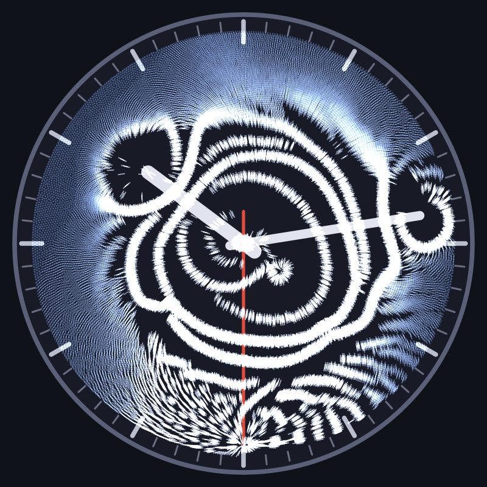
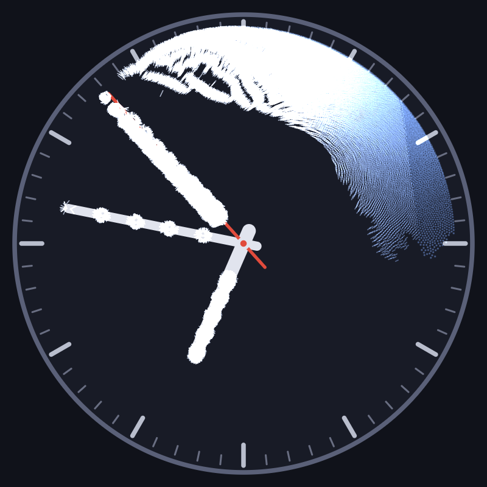
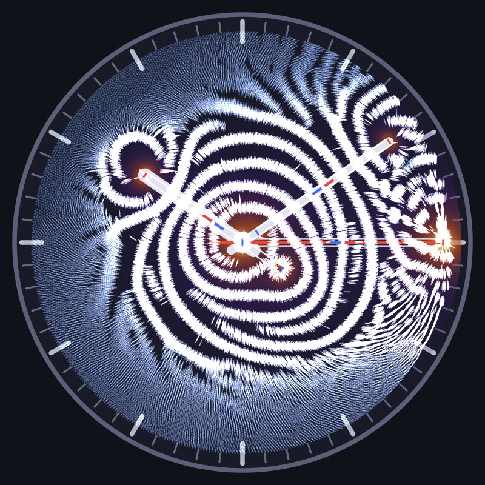

magnetic-time
A clock whose hands are magnets sweeping beneath a layer of magnetic particles.

What it is
A native desktop clock written in Rust with egui. The hour, minute, and second hands each carry a magnet (a bar, a disc, or point dipoles arranged along the hand), and above them sits a simulated dish of liquid containing tens of thousands of magnetic particles. The particles are dragged along by the moving field, lagging with viscous drag: slow hands carry their particles with them, the second hand outruns its own and plows wakes, ripples, and comet trails that slowly relax.
Nothing in the imagery is painted. Every ring, spiral, and starburst is the trace the magnets leave in the particle layer as the hands keep time.
Gallery



How it works
- Each hand's magnets are modeled as point dipoles, soft discs, or bar magnets built from north/south pole faces of distributed magnetic charge. The total field is summed analytically; no grid, no fluid solver.
- Particles live in the overdamped regime: no inertia, velocity equals mobility times the field-gradient force, plus Brownian noise and drag against the dish. A speed cap on the magnetic pull is what makes the second hand outrun its particles.
- Each particle is superparamagnetic: it acquires a moment along the local field, and nearby particles interact with the dipole-dipole pair force. Head-to-tail attraction strings them into chains along field lines; short-range soft-core repulsion keeps clumps from collapsing. Neighbor search runs on a spatial hash grid, in parallel.
- Rendering is a CPU pixel buffer: magnetized particles draw as short additive strokes aligned with the local field, so chains fuse into filaments. The buffer is fully cleared every frame; there are no motion trails. What looks like a trail is particles that are actually there.
Running it
cargo run --releaseA dev panel exposes every tunable live: magnet layout, shape, and strength per hand, particle count, mobility, chain physics, stroke length, and a time-speed multiplier up to 10000x for watching the hour hand work.
There is also a headless mode that simulates a stretch of clock time and writes a PNG, used for reproducible renders:
cargo run --release -- --headless --time 13:37:35 --sim-seconds 600 \
--dump out.png --size 800